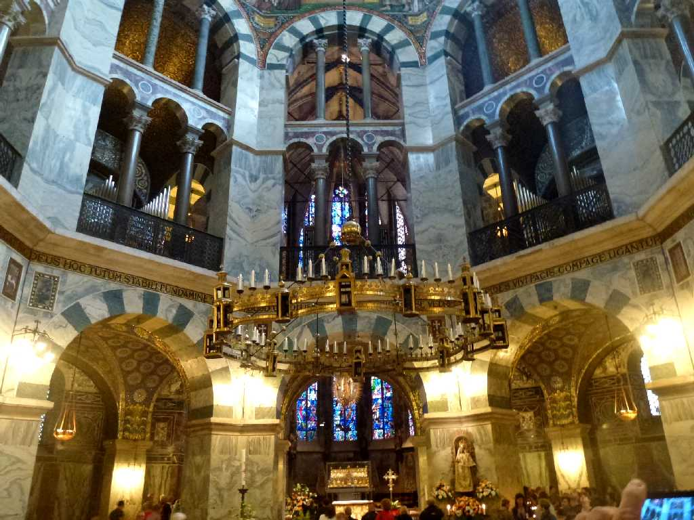
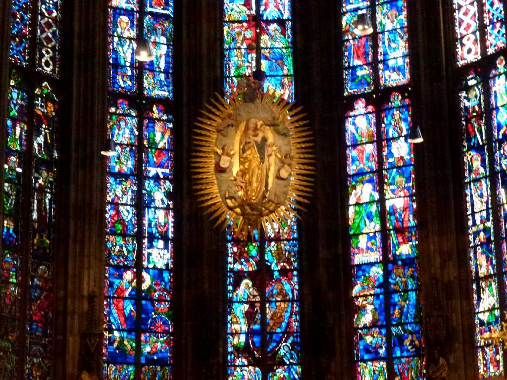

Aachen Dom Aachen
７８６年にカール大帝が宮殿教会として八角の礼拝堂を創り８１４年埋葬された ９３６年から約６００年間は神聖ローマ帝国の３０人の皇帝の戴冠式に使用された
1239 Karlsschrein Aachener Dom
アーヘンの聖なる４つの接触遺物を納めた聖遺物箱 キリストの産着 腰布 聖母マリアの衣服 洗礼者ヨハネの首を覆った布

Aachener Dom Apsis
ガラスの礼拝堂はカール大帝没後６００年を記念して奉献されたゴシック様式の礼拝堂

May 31 2014 Rathaus Aachen